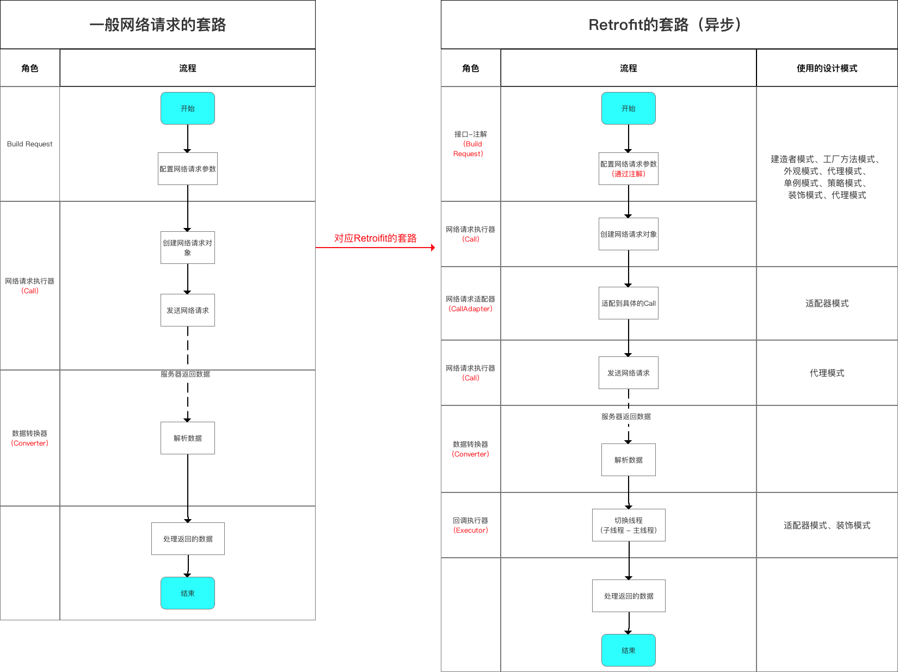
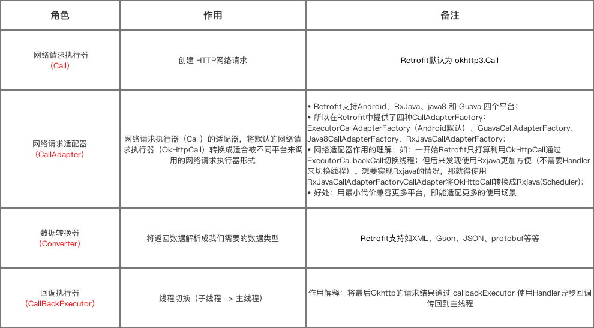
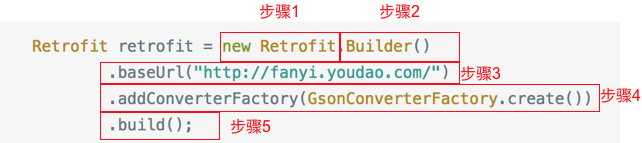

Retrofit的本质流程

具体过程：
- 通过解析网络请求接口的注解、配置、网络请求参数
- 通过动态代理生成网络请求对象
- 通过网络请求适配器对网络请求对象进行平台适配
- 通过网络请求执行器发送网络请求
- 通过数据转换器解析服务器返回的数据
- 通过回调执行器切换线程
- 用户在主线程处理返回结果
下面介绍上面提到的几个角色

源码分析
Retrofit的使用步骤：
- 创建Retrofit实例
- 创建网络请求接口实例并配置网络请求参数
- 发送网络请求
- 处理服务器返回的数据
创建Retrofit实例

步骤1
1 | <-- Retrofit类 --> |
成功建立一个Retrofit对象的标准：配置好Retrofit类里的成员变量
serviceMethod：包含所有网络请求信息的对象baseUrl：网络请求的url地址callFactory：网络请求工厂adapterFactories：网络请求适配器工厂的集合converterFactories：数据转换器工厂的集合callbackExecutor：回调方法执行器
CallAdapter详细介绍
- 定义：网络请求执行器（Call）的适配器
Call在Retrofit里默认是
OkHttpCall在Retrofit中提供了四种CallAdapterFactory： ExecutorCallAdapterFactory（默认）、GuavaCallAdapterFactory、Java8CallAdapterFactory、RxJavaCallAdapterFactory
- 作用：将默认的网络请求执行器（OkHttpCall）转换成适合被不同平台来调用的网络请求执行器形式
- 如：一开始
Retrofit只打算利用OkHttpCall通过ExecutorCallbackCall切换线程；但后来发现使用Rxjava更加方便（不需要Handler来切换线程）。想要实现Rxjava的情况，那就得使用RxJavaCallAdapterFactoryCallAdapter将OkHttpCall转换成Rxjava(Scheduler)：
1 | // 把response封装成rxjava的Observeble，然后进行流式操作 |
- Retrofit还支持java8、Guava平台。
步骤2
1 | <-- Builder类--> |
Builder设置了默认的
- 平台类型对象：Android
- 网络请求适配器工厂：CallAdapterFactory
- 数据转换器工厂： converterFactory
- 回调执行器：callbackExecutor
步骤3
1 | <-- 步骤1 --> |
baseUrl（）用于配置Retrofit类的网络请求url地址
步骤4
1 | public final class GsonConverterFactory extends Converter.Factory { |
1 | // 将上面创建的GsonConverterFactory放入到 converterFactories数组 |
创建一个含有Gson对象实例的GsonConverterFactory并放入到数据转换器工厂converterFactories里
步骤5
1 | public Retrofit build() { |
成功创建了Retrofit的实例
创建网络请求接口的实例
1 | retrofit.create(XXX.class); |
1 | public <T> T create(final Class<T> service) { |
创建网络接口实例用了外观模式 & 代理模式
通过代理模式中的动态代理模式，动态生成网络请求接口的代理类，并将代理类的实例创建交给InvocationHandler类 作为具体的实现，并最终返回一个动态代理对象。
使用动态代理的好处：
- 当
NetService对象调用getCall（）接口中方法时会进行拦截，调用都会集中转发到InvocationHandler#invoke（），可集中进行处理 - 获得网络请求接口实例上的所有注解
- 更方便封装
ServiceMethod
1 | new InvocationHandler() { |
Retrofit采用了外观模式统一调用创建网络请求接口实例和网络请求参数配置的方法，具体细节是:
- 动态创建网络请求接口的实例（代理模式 - 动态代理）
- 创建
serviceMethod对象（建造者模式 & 单例模式（缓存机制）） - 对
serviceMethod对象进行网络请求参数配置：通过解析网络请求接口方法的参数、返回值和注解类型，从Retrofit对象中获取对应的网络请求的url地址、网络请求执行器、网络请求适配器 & 数据转换器。（策略模式） - 对
serviceMethod对象加入线程切换的操作，便于接收数据后通过Handler从子线程切换到主线程从而对返回数据结果进行处理（装饰模式） - 最终创建并返回一个
OkHttpCall类型的网络请求对象
执行网络请求
Retrofit默认使用OkHttp，即OkHttpCall类OkHttpCall提供了两种网络请求方式：- 同步请求：
OkHttpCall.execute() - 异步请求：
OkHttpCall.enqueue()
- 同步请求：
同步请求
- 步骤1：对网络请求接口的方法中的每个参数利用对应
ParameterHandler进行解析，再根据ServiceMethod对象创建一个OkHttp的Request对象 - 步骤2：使用
OkHttp的Request发送网络请求； - 步骤3：对返回的数据使用之前设置的数据转换器（GsonConverterFactory）解析返回的数据，最终得到一个
Response<T>对象
异步请求
- 步骤1：对网络请求接口的方法中的每个参数利用对应
ParameterHandler进行解析，再根据ServiceMethod对象创建一个OkHttp的Request对象 - 步骤2：使用
OkHttp的Request发送网络请求； - 步骤3：对返回的数据使用之前设置的数据转换器（GsonConverterFactory）解析返回的数据，最终得到一个
Response<T>对象 - 步骤4：进行线程切换从而在主线程处理返回的数据结果
总结
Retrofit 本质上是一个 RESTful 的HTTP 网络请求框架的封装，即通过 大量的设计模式 封装了 OkHttp ，使得简洁易用。具体过程如下：
Retrofit将Http请求 抽象 成Java接口- 在接口里用 注解 描述和配置 网络请求参数
- 用动态代理 的方式，动态将网络请求接口的注解 解析 成
HTTP请求 - 最后执行
HTTP请求